Calcolo dell’omologia simpliciale per il complesso di catene generato da un 2-simplesso
Sia  un 2-simplesso, e sia
un 2-simplesso, e sia  il complesso simpliciale generato da 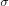.
Sia
il complesso simpliciale generato da 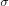.
Sia  un PID.
un PID.
Denotando con
si ha che i complessi di catene simpliciali sono (vedi Modulo Libero Generato da un insieme)
Le mappe di bordo sono le seguenti:
Si vogliono calcolare i moduli di omologia.
Modulo di omologia 2
Si ha che 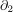 è una mappa iniettiva1, e quindi 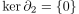. Inoltre, ovviamente, , e dunque 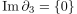. Dunque

Modulo di omologia 1
Per quanto riguarda , questo è semplicemente il sottomodulo generato da 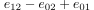,
Consideriamo invece un generico elemento di 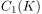, ovvero, fissati 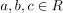,

Per calcolare il 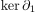 imponiamo
Questa uguaglianza è vera se e solo se
(->) Infatti, i moduli 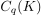 sono moduli liberi, e in particolare 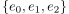 è una base di  , e quindi è un insieme linearmente indipendente. Il viceversa (<-) vale perche 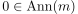 per ogni 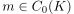 (vedi Annullatore-Moduli).
, e quindi è un insieme linearmente indipendente. Il viceversa (<-) vale perche 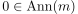 per ogni 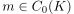 (vedi Annullatore-Moduli).
Dunque, 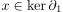 se e solo se 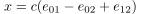 e dunque
Pertanto
Modulo di omologia 0
Siccome 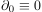, allora 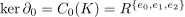. Viceversa, 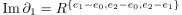, e dunque
Footnotes:
: La mappa è iniettiva. siano 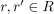 tali che
Allora si ha che
ma, siccome è un modulo libero e 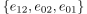 è una base (e quindi insieme linearmente indipendente), si ha che 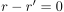, ovvero 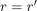, ovvero